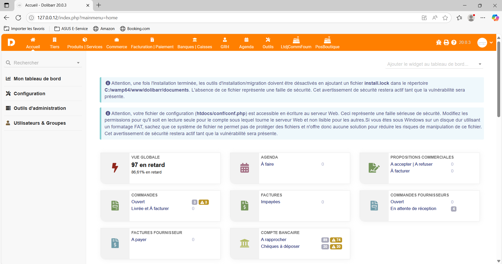

Pour commencer la semaine ainsi que le stage, il a fallu commencer par installer et s’approprier les outils de travail. Le travail est effectué à l’aide de git pour organiser le travail de groupe ainsi que la gestion de versions, git que je connaissais déjà. Le projet principal du service informatique en ce moment, c’est la modification et la mise en place de l’ERP Dolibarr (dont je parlerai un peu plus après) pour toutes les boutiques. Dolibarr utilisant une bonne quantité de prérequis, serveur en PHP ainsi qu’une base de données, il fallait donc configurer le tout, mais heureusement une solution existe pour tout installer facilement et que tout soit configuré à l’avance : WAMP (Windows Apache MySQL PHP). Une fois le WAMP et Dolibarr installés, ainsi que l’ajout d’une base de données fictive, il était temps de prendre en main le tout.
 Recapitulatif de l'acronime WAMP.
Recapitulatif de l'acronime WAMP.
Mais avant cela, petite présentation de Dolibarr.
Dolibarr est une ERP et un CRM Open Source pour les entreprises (voir : Dolibarr pour plus d'information detaillé ). Dolibarr est donc utilisé par l'entreprise pour gérer les stocks, ainsi que la vente et les commandes, etc... En soi c'est un service tout-en-un pour les sociétés, mais à quoi bon travailler dessus si c'est déjà un outil si puissant ? Dolibarr fonctionne sur le principe de modules activables ou désactivables selon les besoins : il existe par exemple un module pour les clients, un pour les stocks, etc. Ces modules de base sont gratuits et inclus avec Dolibarr, mais il est aussi possible de développer ses propres modules personnalisés et de les intégrer à son instance Dolibarr, voire de les commercialiser si d’autres entreprises peuvent en avoir besoin. Un autre point fort de Dolibarr est son système de « crochets » (hooks), qui permet de modifier ou d’étendre les modules natifs sans risquer de perdre ses personnalisations lors des mises à jour. Ce système facilite l’insertion de fonctionnalités développées sur mesure directement dans les modules d’origine.
 Inteface principale de Dolibarr.
Suite à l’installation, j’ai eu droit à un TP pour me familiariser avec le développement sur Dolibarr. Il s’agissait d’ajouter un module qui insère un bouton dans le module clients, permettant d’ajouter ou de retirer un préfixe au nom. Pour réussir, il a fallu comprendre et utiliser le système de crochets de Dolibarr, ainsi que mettre en pratique mes connaissances en PHP. Une fois ce TP terminé, j’allais enfin pouvoir participer de manière utile au développement, car ce TP, bien qu’intéressant, n’était qu’une mise en bouche de ce que l’on peut réaliser…